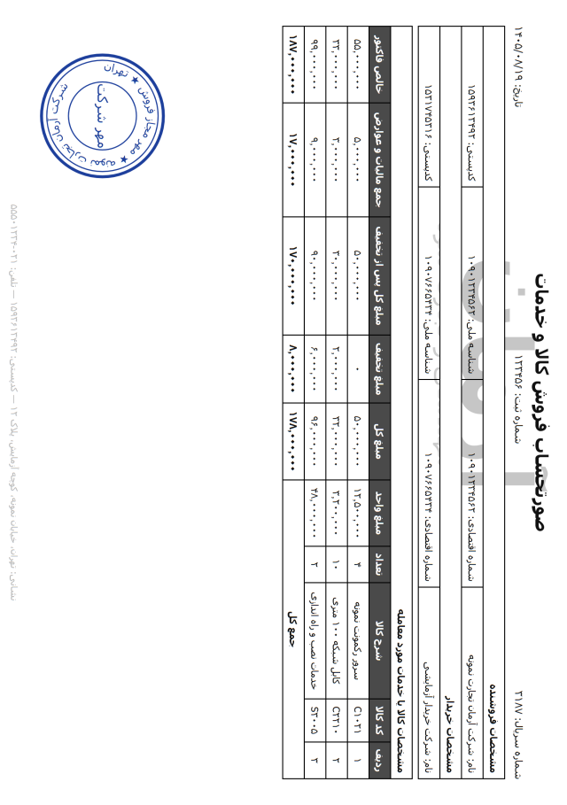
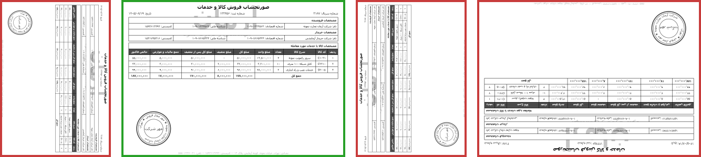
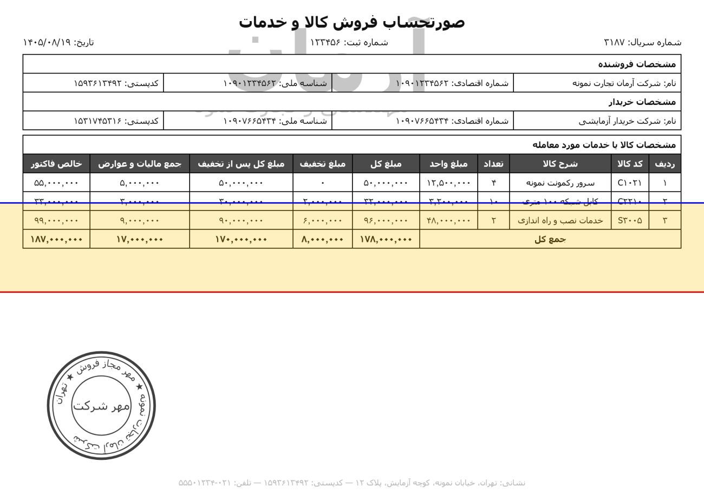
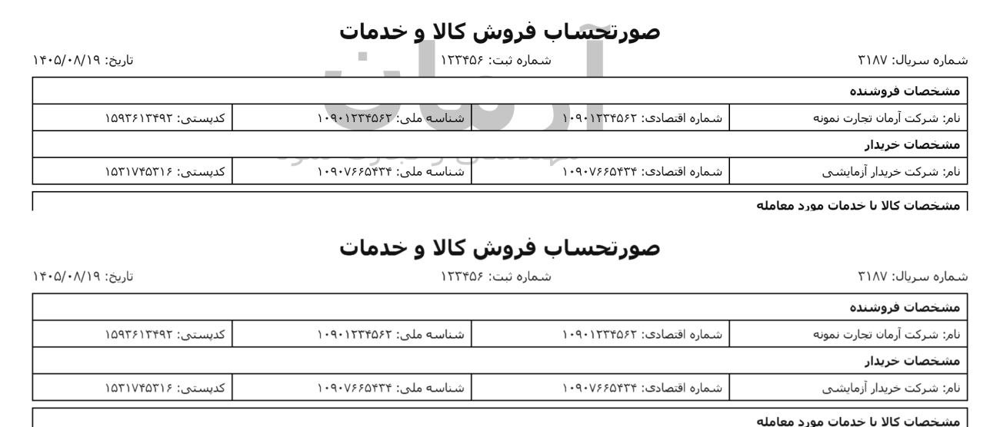
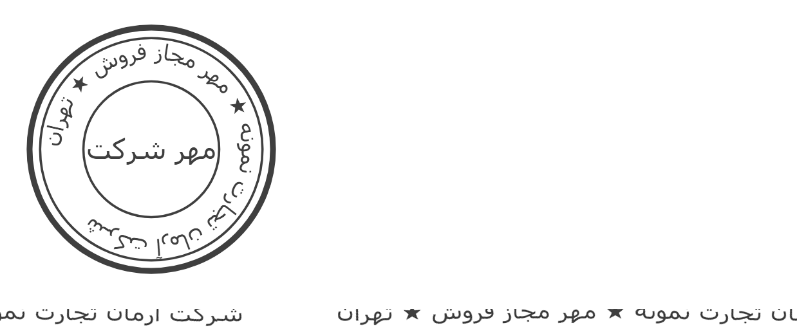
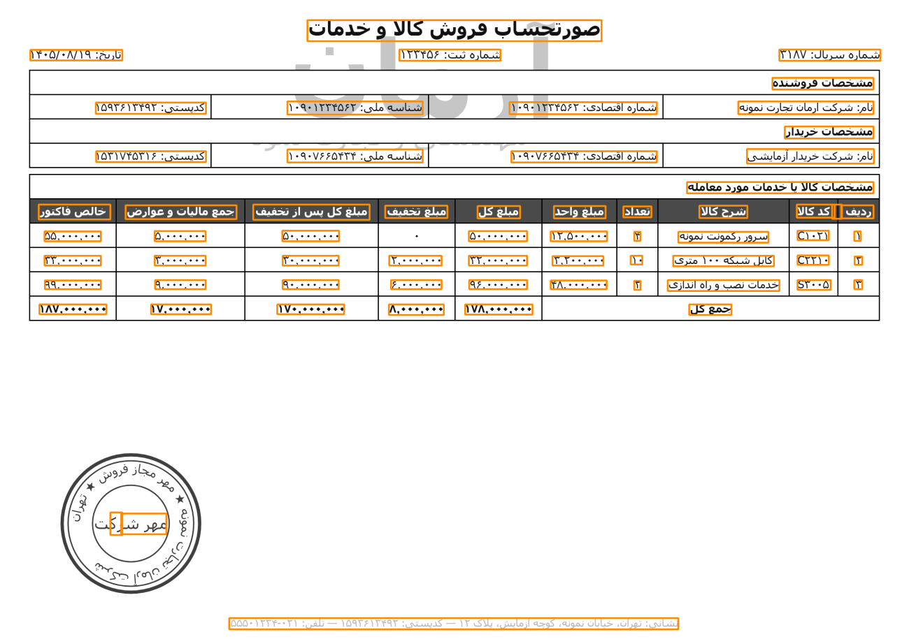
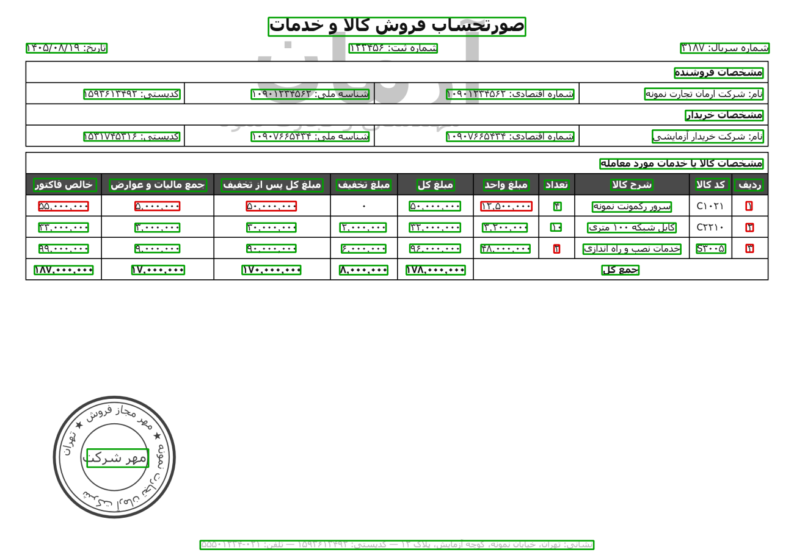
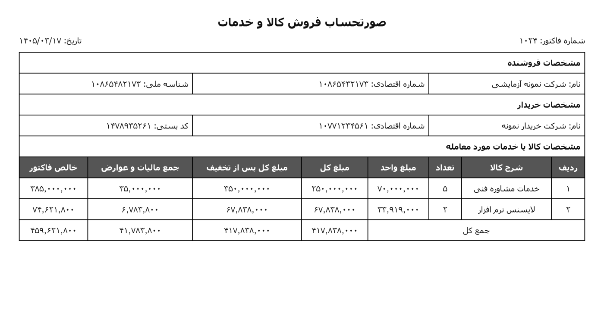
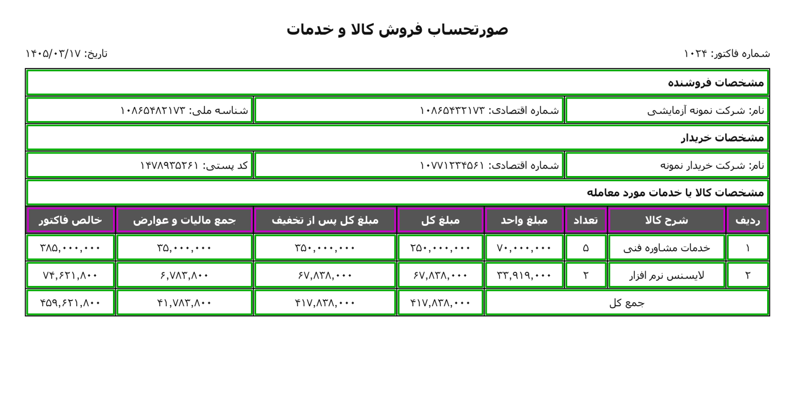

این پروژه متن، جدول و فیلدهای مهم (کد ملی، شناسه ملی، شبا، کدپستی، مبلغ، تاریخ) را از اسکنها و PDFهای فارسی بیرون میکشد. خواندن حروف را مدل آمادهی Indra OCR انجام میدهد؛ کار این پروژه همهی چیزهایی است که دور مدل ساخته شده: آمادهسازی تصویر، تکهکردن صفحه، بازسازی جدول، و قواعدی که خروجی را با منطق خود سند میسنجند.
| ورودی | PDF (چندصفحهای) یا تصویر تکصفحهای: png، jpg، bmp، tif، webp |
|---|---|
| خروجی متن | .txt: متن کامل و مرتب هر صفحه؛ جدول به صورت ردیفهای markdown در جای خودش |
| خروجی ساختاریافته | .json: متن خام و اصلاحشده، اصلاحهای خودکار، صف مرور، خطوط کماطمینان، جدولها، فاکتور (اقلام، جمعها، طرفین، نتیجهی هر معادله) |
| گزارش مرور | .html: تصویر هر صفحه کنار متن؛ اصلاحها سبز، موارد مشکوک نارنجی، خطوط کماطمینان قرمز |
| سرعت | ۲ تا ۵ ثانیه برای هر صفحه روی CPU با ۴ ریسه (صفحههای پرجدول کندترند) |
| بخش | کار |
|---|---|
| pdfio | خواندن PDF/تصویر و رندر هر صفحه به تصویر خاکستری ۳۰۰ dpi |
| orientation | پیدا کردن جهت درست صفحه با امتحان هر ۴ چرخش، و رفع کجی |
| engine | بارگذاری مدلهای ONNX ایندرا و «Force-RTL» |
| tiling، vision/ | دو تایل همپوشان؛ حذف واترمارک سربرگ؛ بازیابی پاورقی کمرنگ؛ باز کردن مهر دایرهای |
| tables/ | پیدا کردن سلولهای جدول خطدار و خواندن سلولبهسلول (حتی سرستون تیره) |
| invoice/ | نگاشت ستونها، معادلات ردیف و جمع، طرفین معامله، اصلاح یکتا |
| text/ | نرمالسازی، checksum شناسهها، تاریخ جلالی، معادلهی سرمایه، دیکشنری سازمان |
| pipeline | کنار هم گذاشتن همهی مراحل و ساخت متن نهایی |
| report/، api/، cli | نوشتن خروجیها؛ سرویس HTTP با Swagger؛ خط فرمان |
| evaluation/ | سنجش دقت روی اسناد دارای متن درست، مقایسه با مدلهای دیگر، داشبورد و گالری خطا |
هر سند صفحهبهصفحه از این مراحل میگذرد. ستون چپ نام تابع اصلی هر مرحله است.
خروجی مدل برای هر خط سه چیز است: box (مختصات x0، y0، x1، y1 روی تصویر)، text و conf (اطمینان بین ۰ و ۱). همهی مراحل بعدی روی همین خطها کار میکنند: ادغام با همپوشانی جعبهها، تخصیص به سلول جدول با مرکز جعبه، و علامت «کماطمینان» برای conf < 0.75.
ورودی این بخش فاکتور نمونهی الف است (samples/invoice-sample.png، ۱۷۶۰ × ۲۵۰۰ پیکسل): یک فاکتور فروش مصنوعی که مثل اسکنهای واقعی ۹۰ درجه چرخیده روی صفحهی عمودی افتاده است. زیر سربرگش لوگوی خاکستری (واترمارک) هست، سرستون جدولش تیره است، پاورقی کمرنگ دارد و یک مهر دایرهای. همهی نامها، شمارهها و شناسهها ساختگیاند (شناسهها checksum معتبر دارند). رندر تمیز است، پس از اسکن واقعی آسانتر است؛ ضعفهای دیدهشده روی اسکن واقعی بیشترند.

مشکل: فاکتورهای افقی روی کاغذ عمودی چاپ میشوند (۶ از ۷ فاکتور اولیه). مدل جهتیابی خود ایندرا روی چند صفحهی صاف، آن را وارونه کرد.
راهحل: صفحه در هر ۴ چرخش (۰، ۹۰، ۱۸۰، ۲۷۰ درجه) با نصف اندازه بررسی میشود. در هر چرخش خطوط تشخیص داده میشوند؛ خطی «افقی» است که عرضش بیش از ۲ برابر ارتفاعش باشد؛ ۱۲ خط افقیِ پهنتر خوانده میشوند و
score = (share of horizontal lines) × (mean recognition confidence)
چرخش با بیشترین امتیاز برنده است، سپس کجی جزئی با ort.upright صاف میشود.

هزینه در این نمونه: 0.82 ثانیه. در صفحهی وارونه (چرخش چهارم) مدل هنوز چیزهایی میخواند ولی با اطمینان کمتر؛ به همین دلیل امتیازش 0.39 است نه صفر. روی همین نمونه Indra خام هم صفحهی چرخیده را درست خواند (خروجی خام روی صفحهی چرخیده و صاف دقیقاً یکی بود)؛ پس این مرحله اینجا فقط تضمین است، نه نجاتدهنده.
ایندرا با مدل script.onnx برای هر خط تصمیم میگیرد کدام recognizer (لاتین، راستبهچپ، CJK) آن را بخواند. روی اسناد فارسی واقعی (نامهها)، سطرهای کوتاه تاریخ و سطرهای دوزبانه به مدل لاتین میرفتند و یک تاریخ جلالی به رشتهای مثل 18-1/11/14 تبدیل میشد؛ کدپستی هم به حروف لاتین بیمعنی. در حالت مهندسیشده این تصمیم موقتاً با «همه راستبهچپ» جایگزین میشود. recognizer راستبهچپ ارقام و حروف لاتین را هم میخواند.
مدل هر تصویر را قبل از تشخیص کوچک میکند؛ روی صفحهی کامل، متن ریز گم میشود. پس صفحه به دو نیمه شکسته میشود که ۱۸٪ ارتفاع با هم همپوشانی دارند تا خطی که روی مرز است حداقل در یک تایل کامل باشد.

مشکل دیدهشده: در اسناد واقعی، شماره ثبت روی لوگوی خاکستری پسزمینهی سربرگ چاپ میشد و رقمهایش غلط خوانده میشد. در همین نمونه هم شماره ثبت روی واترمارک است: Indra خام آن را ۱۲۲۴۵۶ خواند (چاپی: ۱۲۳۴۵۶) و شناسه ملی فروشنده را ۱۰۹۰۱۲۳۴۵۶۳ (چاپی: ۱۰۹۰۱۲۳۴۵۶۲، با checksum نامعتبر). خروجی نهایی هر دو را درست دارد. سهم این پاس بهتنهایی جدا سنجیده نشده؛ تایلها و خواندن سلول هم در آن نقش دارند.
راهحل: روی ۳۰٪ بالای صفحه، هر پیکسل روشنتر از ۱۳۵ سفید میشود، یک blur ملایم ۳×۳ میخورد و یک پاس OCR دیگر انجام میشود. اگر خطی در هر دو پاس آمد، نسخهی با اطمینان بالاتر میماند.


نتیجهی واقعی در این نمونه:


گزیدهای از خطوط خواندهشده (خام، قبل از پسپردازش؛ به همین ترتیب از بالا):
| اطمینان | متن خواندهشده |
|---|---|
| 0.957 | صورتجشاب فروش کالا و خدمات («حساب» ← «جشاب»؛ بخش ۱۰) |
| 0.942 | شماره سریال: ۳۱۸۷ |
| 0.896 | شماره ثبت: ۱۲۳۴۵۶ |
| 0.934 | تاریخ: ۱۴۰۵/۰۸/۱۹ |
| 0.976 | نام: شرکت آرمان تجارت نمونه |
| 0.854 | شماره اقتصادی: ۱۰۹۰۱۲۳۴۵۶۲ |
| 0.900 | شناسه ملی: ۱۰۹۰۱۲۳۴۵۶۲ |
| 0.894 | کدیستی: ۱۵۹۳۶۱۳۴۹۲ («کدپستی» ← «کدیستی»؛ بخش ۱۰) |
| 0.902 | شماره اقتصادی: ۱۰۹۰۷۶۶۵۴۳۴ |
| 0.802 | کدیستی: ۱۵۳۱۷۴۵۳۱۶ |
| 0.646 | ۱۲,۵۰۰,0۰۰ (صفر لاتین وسط ارقام فارسی؛ اطمینان کم) |
| 0.560 | ۰,۰۰۰,۰۰۰ (باید «۰» باشد (تخفیف ردیف ۱)؛ اطمینان کم) |
| 0.875 | ٢٣,٠٠٠,٠٠٠ (باید ۳۳٬۰۰۰٬۰۰۰ باشد (۳ ← ۲)؛ بخش ۱۰) |
| 0.968 | مهر شرکت |
| 0.835 | نشانی: تهران، خیابان نمونه، کوچه آزمایش، پلاک ۱۲ — کدپستی: ۱۵۹۳۶۱۳۴۹۲ — تلفن: ۵۵۵۰۱۲۳۴-۰۲۱ |
خطای «حساب ← جشاب» و «کدپستی ← کدیستی» را بعداً بهطور مستقیم میبینید؛ هر دو اطمینان بالا دارند. اطمینان بالا یعنی درست بودن را تضمین نمیکند.
خطوط تایل پایین، پاس واترمارک، پاورقی و مهر، روی خطوط موجود ادغام میشوند. دو خط «یکی» هستند اگر:
IoU(box1, box2) > 0.20 OR (vertical overlap > 55% of the shorter height AND horizontal overlap > 50% of the narrower width)
از دو خط یکی، آنکه اطمینان بیشتری دارد میماند. در پایان خطوط بر اساس y (گرد شده به ۳۰ پیکسل، تا خطوط همردیف کنار هم بمانند) و بعد از راست به چپ مرتب میشوند. همین قاعده است که خط مهر را کنار میزند (بخش ۳.۶).
صورتجشاب فروش کالا و خدمات شماره سریال: ۳۱۸۷ شماره ثبت: ۱۲۲۴۵۶ تاریخ: ۱۴۰۵/۰۸/۱۹ مشخصات فروشنده نام: شرکت آرمان تجارت نمونه شماره اقتصادی: ۱۰۹۰۱۲۳۴۵۶۲ شناسه ملی: ۱۰۹۰۱۲۳۴۵۶۳ کدیستی: ۱۵۹۳۶۱۳۴۹۲ ... C1.1 سرور رکمونت نمونه f 11,0 00,, Y CITY. کابل شبکه ۱۰۰ متری 1. T. T., Y
صورتجشاب فروش کالا و خدمات شماره سریال: 3187 شماره ثبت: 123456 | نام: شرکت آرمان تجارت نمونه | شماره اقتصادی: ۱۰۹۰۱۳۳۴۵۶۲ | شناسه ملی: ۱۰۹۰۱۲۳۴۵۶۲ | کدیستی: ۱۵۹۲۶۱۳۴۹۲ | ... | ۱ | C۱٠٢۱ | سرور رکمونت نمونه | ۴ | ١٢,۵٠٠,٠٠٠ | ٥٠,٠٠٠,٠٠٠ | ٥٠,٠٠٠,٠٠٠ | ۵,٠٠٠,٠٠٠ | ۵۵,۰۰۰,۰۰۰ | | C۲۲۱۰ | کابل شبکه ۱۰۰ متری | ۱۰ | ٢,٢٠٠,٠٠٠ | ٢٢,٠٠٠,٠٠٠ | ٢,٠٠٠,٠٠٠ | ٣٠,٠٠٠,٠٠٠ | ٣,٠٠٠,٠٠٠ | ٢٣,٠٠٠,٠٠٠ | 2 | S۳۰۰۵ | خدمات نصب و راه اندازی | ۲ | ۴٨,٠٠٠,٠٠٠ | ٩۶,٠٠٠,٠٠٠ | ۶,٠٠٠,٠٠٠ | ٩٠,٠٠٠,٠٠٠ | ٩,٠٠٠,٠٠٠ | ٩٩,٠٠٠,٠٠٠ |
Indra خطوط را بدون رابطهی سطر و ستون میدهد؛ معلوم نیست کدام عدد «فی» است و کدام «مبلغ». برای همین جدول جداگانه بازسازی میشود. برای نشان دادن این بخش از فاکتور نمونهی ب استفاده میشود: یک فاکتور مصنوعی دیگر (همهی نامها و شناسهها ساختگیاند) با جدول خطدار و سرستون تیره. دو خطا عمداً در آن چاپ شده: مبلغ کل ردیف ۱ (۲۵۰٬۰۰۰٬۰۰۰ به جای ۵ × ۷۰٬۰۰۰٬۰۰۰ = ۳۵۰٬۰۰۰٬۰۰۰) و یک رقم شناسه ملی فروشنده (۱۰۸۶۵۴۸۲۱۷۳ به جای ۱۰۸۶۵۴۳۲۱۷۳).


سلولی که میانهی روشناییاش زیر ۱۵۰ باشد «تیره» است (سرستون هافتون). این سلولها:
جدولی که از فاکتور نمونهی ب بازسازی شد (عین خروجی):
| ردیف | شرح کالا | تعداد | مبلع واحد | مبلع كل | مبلع کل پس از تخفیف | حمع مالیات و عوارض | خالص فاكتور | | ۱ | خدمات مشاوره فنی | ۵ | ٧٠,٠٠٠,٠٠٠ | ٢٥٠,٠٠٠,٠٠٠ | ٣٥٠,٠٠٠,٠٠٠ | ٣۵,٠٠٠,٠٠٠ | ٣٨۵,٠٠٠,٠٠٠ | | r | لایسنس نرم افزار | ٣٣,٩١٩,٠٠٠ | ۶۷,۸۳۸,۰۰۰ | ۶۷,۸۳۸,۰۰۰ | ۶,٧٨٣,٨٠٠ | ۷۴,۶۲۱,۸۰۰ | | جمع كل | ۴۱۷,۸۳۸,۰۰۰ | ۴۱٧,٨٣٨,٠٠٠ | ۴۱,۷۸۳,۸۰۰ | ۴۵۹,۶۲۱,۸۰۰ |
ردیفی که حداقل ۳ ستون عددی شناختهشده دارد «سرستون اقلام» است. نقش هر ستون با الگوی متن سرستون تعیین میشود (الگوی خاصتر اول):
| نقش | الگوی سرستون |
|---|---|
| after_discount | «پس از» |
| net | «خالص»، «قابل پرداخت»، «به علاوه»، «جمع مبلغ کل» |
| tax | «مالیات»، «عوارض»، «ارزش افزوده» |
| discount، additions | «تخفیف»، «اضافات» |
| unit_price | «مبلغ واحد»، «فی»، «فی واحد» |
| amount | «مبلغ کل»، «مبلغ» |
| qty، unit | «مقدار»، «تعداد»؛ «واحد» |
| description، code، row_no | «شرح»؛ «کد کالا»؛ «ردیف» |
هر سلول ردیفهای بعدی به ستونی میرود که بیشترین همپوشانی افقی (بیش از ۵۰٪) را با سرستون دارد. عددها با parse_number خوانده میشوند: جداکننده (, ، ٬ ٫ . /) فقط وقتی حذف میشود که ارقام سهتایی گروهبندی شده باشند؛ اعشار (۲٫۵) و تاریخ (1402/05/12) عدد حساب نمیشوند.
| معادله | کاربرد |
|---|---|
| qty × unit_price = amount | کدام عدد غلط است؟ |
| amount − discount + additions = after_discount | |
| مالیات = 10% یا 9% پایه | گرد کردن نصف به بالا با ریاضی صحیح؛ مستقل از خالص بررسی میشود |
| net = base + tax | اگر مالیات نیست: net = base × (1 + rate) |
| Σ ستونها = ردیف جمع | اگر نخورد و فاکتور چندصفحهای است، در سطح کل سند بررسی میشود |
عدد OCR فقط وقتی اصلاح میشود که با یک ویرایش رقمی (جایگزینی، حذف یا درج یک رقم) به مقدار مورد انتظار برسد. اگر بیش از یک اصلاح ممکن است، ستونهای دیگر ردیف (پس از تخفیف، مالیات، خالص) «شاهد» میشوند. اگر باز هم یکتا نشد، هیچ عددی عوض نمیشود و نتیجه mismatch با فهرست کاندیدهاست. خروجی واقعی verify_item:
| ورودی (عددهای OCR) | نتیجه |
|---|---|
| qty=5, unit=70,000,000, amount=250,000,000, tax=35,000,000, net=385,000,000 | corrected: مبلغ ← 350,000,000. دو اصلاح ممکن بود (مبلغ ۲→۳ یا فی ۷→۵)، ولی فقط مبلغ ۳۵۰ میلیون با مالیات ۱۰٪ و خالص جور است. |
| qty=5, unit=70,000,000, amount=250,000,000 | mismatch، هیچ تغییری. کاندیدها: amount=350,000,000 یا unit_price=50,000,000. شاهدی برای انتخاب نیست؛ به مرور انسانی میرود. |
| qty=2, unit=33,919,000, amount=67,838,000, net=74,621,800 | ok و base×(1+10%)=net هم ok. |
| بخش | خروجی |
|---|---|
| سربرگ | تاریخ 1405/03/17، شماره 1024 ✓ |
| فروشنده | شماره اقتصادی 10865432173 (checksum درست)؛ شناسه ملی 10865482173 → 10865432173 در ساختار فاکتور اصلاح شد ✓ (قاعدهی شخص حقوقی)؛ متن خروجی همان خوانش خام را نگه میدارد و سه کاندید در صف مرور است: 10565482173، 10865282173، 10865432173. |
| خریدار | شماره اقتصادی 10771234561، کدپستی 1478935261 ✓ |
| اقلام | ۲ ردیف با پس از تخفیف، مالیات و خالص؛ همهی معادلات مالیات و خالص ok |
| جمعها | جمع پس از تخفیف، مالیات و خالص با جمع اقلام برابر ok |
| خلاصه | ۱۰ ok، ۱ corrected، ۰ mismatch |
| خطای مبلغ ردیف ۱ | گرفته نشد. ستونهای «مبلغ واحد» و «مبلغ کل» نگاشت نشدند چون سرستون «مبلع» خوانده شده بود؛ پس معادلهی qty × unit = amount اصلاً اجرا نشد (بخش ۱۰). |
همهی متن صفحه (بیرون از جدول) به ترتیب از این قواعد میگذرد (text/postprocess.py):
| شناسه | قاعده |
|---|---|
| کد ملی (۱۰ رقم) | r = Σ d[i]×(10−i) mod 11؛ رقم آخر = r اگر r < 2، وگرنه 11 − r. ده رقم یکسان رد میشود. |
| شناسه ملی حقوقی (۱۱ رقم) | هر رقم + (رقم دهم + ۲)، ضرب در ضرایب 29, 27, 23, 19, 17، mod 11 |
| شبا | IR و ۲۴ رقم، mod 97 = 1 (فقط اعتبارسنجی، بدون اصلاح) |
| کدپستی | ۱۰ رقم که با صفر شروع نشود |
اصلاح فقط برای کد ملی و شناسه ملی، و فقط وقتی متن کنارش «کد ملی / شماره ملی / شناسه ملی» است. سه نوع خطا بررسی میشود:
| ورودی | نتیجهی واقعی |
|---|---|
| 4297752859 | valid |
| 429752859 (۹ رقم) | auto_corrected ← 4297752859؛ در کل فضای کد ملی فقط همین یک کاندید معتبر است. |
| 5884825975 (۶ ← ۴) | ambiguous_review؛ ۳ کاندید معتبر: 5886825975 (درست)، 5884325975، 5884825978. هیچکدام انتخاب نمیشود. |
عبارت «سرمایه X میلیارد ریال منقسم به Y سهم با نام Z ریالی» باید در X × 10⁹ = Y × Z صدق کند. اگر Y نخورد ولی ۳ رقم اولش با مقدار مورد انتظار یکی است (خطا فقط در صفرها یا جداکننده)، Y اصلاح میشود. ارزش اسمی 10000 فقط وقتی 1000 میشود که معادله با ۱۰۰۰۰ نخورد و با ۱۰۰۰ دقیقاً بخورد.
مقادیر ثابت سازمان (شماره ثبت، کدپستی، تلفن) در data/domain_lexicon.json هستند. مقدار فقط وقتی جایگزین میشود که نام سازمان در متن آمده باشد و نشانهای از همان فیلد در OCR دیده شود. نتیجه با برچسب [تطبیق دیکشنری سازمان: ...] به ته متن اضافه میشود. در API و خط فرمان پیشفرض روشن است؛ در ارزیابی همیشه خاموش است چون عدد را مصنوعی بالا میبرد.
ورودی: با شماره ملی ۴۲۹۷۵۲۸۵۹ به عنوان مدیرعامل، مورخ ۱۴۰۵/۰۸۱۹ و مورخ .1405/083 خروجی: با شماره ملی 4297752859 به عنوان مدیرعامل، مورخ 1405/08/19 و مورخ .1405/083 اصلاح خودکار: 429752859 ← 4297752859 (رقم تکراری) | 1405/0819 ← 1405/08/19 صف مرور: مورخ .1405/083 → کاندیدها: 1405/08/03، 1405/08/30، 1405/08/31
متن نهایی هر صفحه (text_dedup) از دو منبع ساخته میشود و هر چیز فقط یک بار میآید:
متن نهایی فاکتور نمونهی ب (عین خروجی، کوتاهشده):
صورتحساب فروش کالا و خدمات شماره فاکتور: 1024 تاریخ: 1405/03/17 | مشخصات فروشنده | | نام: شرکت نمونه آزمایشی | شماره اقتصادی: ۱۰۸۶۵۴۳۲۱۷۳ | شناسه ملی: ۱۰۸۶۵۴۸۲۱۷۳ | ... | ۱ | خدمات مشاوره فنی | ۵ | ٧٠,٠٠٠,٠٠٠ | ٢٥٠,٠٠٠,٠٠٠ | ... | r | لایسنس نرم افزار | ٣٣,٩١٩,٠٠٠ | ... 2 | جمع كل | ۴۱۷,۸۳۸,۰۰۰ | ... [خطوط تکمیلی از ناحیه جدول] مبلغ واحد مبلغ کل
دو خط تکمیلی همان سرستونهاییاند که OCR صفحه درست («مبلغ») ولی OCR سلول غلط («مبلع») خوانده بود. «2» تنها همان رقم تعداد ردیف ۲ است که به سلولش نرسید.
| فایل | محتوا |
|---|---|
| name.txt | متن نهایی هر صفحه با سرتیتر === صفحه N === |
| name.json | برای هر صفحه: raw_text، text، text_dedup، corrections، review_queue، low_confidence_lines، tables_markdown، invoice |
| name.html | تصویر صفحه کنار متن؛ کادر سبز اصلاحها، نارنجی موارد مرور، قرمز خطوط کماطمینان؛ کادر فاکتور با رنگ وضعیت هر معادله |
نام فایلها همیشه نام فایل ورودی است (18185.pdf → 18185.txt)؛ خط فرمان و API از یک تابع (render_bundle) استفاده میکنند.
run.bat "files\sample.pdf" :: OCR and write output\ .venv\Scripts\python.exe -m persian_ocr run FILE --max-pages 1 --no-lexicon --out DIR .venv\Scripts\python.exe -m persian_ocr debug INVOICE.pdf --page 2 :: table + equations of one page .venv\Scripts\python.exe -m persian_ocr serve --host 127.0.0.1 --port 8000
from persian_ocr.config import PipelineConfig from persian_ocr.engine import OcrEngine from persian_ocr.pipeline import process_document engine = OcrEngine.load(threads=4) result = process_document(engine, "doc.pdf", PipelineConfig(use_lexicon=False)) page = result["pages"][0] page["text_dedup"], page["corrections"], page["review_queue"], page["invoice"]
| Endpoint | کار |
|---|---|
| POST /ocr | نتیجهی کامل (همان JSON) |
| POST /ocr/text | فقط متن نهایی هر صفحه |
| POST /ocr/review | گزارش HTML مرور |
| POST /ocr/download?format=txt|json|html|zip | دانلود با نام فایل ورودی |
| POST /validate/national-id | legal-id | iban | postal-code | checksum و اصلاح محافظهکارانه، بدون مدل |
| POST /text/postprocess | /text/normalize | قواعد متنی روی هر متن |
| POST /invoice/verify-item | معادلات یک ردیف فاکتور |
| GET /health | وضعیت سرویس (بدون احراز هویت) |
۸ سند (۶ فاکتور و ۲ نامه؛ ۲۷ صفحه) با متن درست دستی. حالت مهندسیشده همیشه بدون دیکشنری سازمان سنجیده میشود. ۳۰ عدد GT که با دیدن تصویر «غلطِ خود GT» یا «روی سند چاپنشده» تشخیص داده شدند، فقط در حافظه کنار گذاشته میشوند (ماسک GT).
| متریک (۶ سند ۱ تا ۲ صفحهای) | Indra خام | این پروژه |
|---|---|---|
| Word Accuracy ↑ | 74.2٪ | 83.9٪ |
| WER بدونترتیب ↓ | 25.8٪ | 16.3٪ |
| SER (خط با حداقل یک خطا) ↓ | 67.0٪ | 45.6٪ |
| دقت اعداد ≥ ۴ رقم ↑ | 24.5٪ | 78.4٪ (بدون ماسک ۶۸٫۱٪) |
| مقایسه روی ۳ سند دارای GT | Word Acc ↑ | SER adj ↓ | دقت اعداد ↑ |
|---|---|---|---|
| این پروژه (بدون دیکشنری) | 68.9٪ | 52.6٪ | 63.2٪ |
| Claude | 73.4٪ | 52.6٪ | 67.6٪ |
| Gemini | 74.0٪ | 56.9٪ | 64.7٪ |
| Chandra | 59.3٪ | 67.9٪ | 35.3٪ |
ابزارهای ارزیابی: python -m evaluation (متریکها)، fields (فیلدهای نامهها)، compare (مقایسه با مدلهای دیگر)، errors (گالری اعداد اشتباه با برش تصویر و دکمهی قضاوت)، dashboard (تصویر هر صفحه کنار خروجی).
این موارد از اجرای واقعی کد روی دو فاکتور این سند (الف و ب) آمدهاند، نه از حدس. هر دو فاکتور مصنوعی و تمیزاند؛ روی اسکن واقعی مشکلات بیشتری دیده میشود.
| فیلد | پیشفرض | معنی |
|---|---|---|
| dpi | 300 | وضوح رندر PDF |
| tiling | True | دو تایل همپوشان |
| overlap_ratio | 0.18 | سهم همپوشانی تایلها |
| engineered | True | همهی تکنیکها؛ False = Indra خام |
| tables | True | استخراج جدول و فاکتور |
| header_fraction | 0.30 | بخش بالای صفحه برای حذف واترمارک |
| low_conf | 0.75 | آستانهی خط کماطمینان |
| use_lexicon | True | دیکشنری سازمان |
| max_pages | 0 | حداکثر صفحه (۰ = همه) |
| متغیر | پیشفرض | کاربرد |
|---|---|---|
| PERSIAN_OCR_MODEL_DIR | indra-ocr/ | پوشهی وزنهای مدل |
| PERSIAN_OCR_API_KEY | خالی | کلید هدر X-API-Key |
| PERSIAN_OCR_MAX_UPLOAD_MB | 100 | حداکثر حجم آپلود |
| PERSIAN_OCR_HOST / PORT | 0.0.0.0 / 8000 | آدرس سرویس |
با وارد شدن بستهی persian_ocr، TEMP، TMP و HF_HOME به .cache/ داخل پروژه میروند تا چیزی روی درایو C نوشته نشود.
persian_ocr/ config.py engine.py pdfio.py orientation.py tiling.py pipeline.py cli.py vision/ watermark.py footer.py stamps.py tables/ cells.py dark.py lines.py extract.py models.py invoice/ numbers.py columns.py equations.py header.py parser.py document.py text/ normalize.py validators.py correction.py dates.py accounting.py lexicon.py postprocess.py report/ html.py files.py api/ app.py deps.py uploads.py downloads.py schemas.py server.py routes/ data/domain_lexicon.json evaluation/ metrics report fields compare dashboard errors groundtruth cache hypotheses tests/ 197 unit tests (no model needed) docs/ code-reference.md/.html techniques.md project-memory.md guide/ (this document)
جزئیات تابعبهتابع: docs/code-reference.md. توضیح هر تکنیک با مشکل دیدهشده و شواهد: docs/techniques.md.